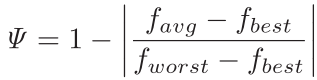
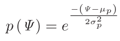
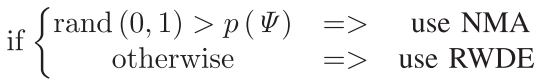

LocalImproveBestBee: Deterministic Short-Distance Exploration of Design Space
Created on May 11, 2017 By Parsa Beheshti
From "Memetic Artificial Bee Colony Algorithm for Large-Scale Global Optimization" by Fister et al.
Contents
Function I/O
Input:
- solutionDB: Current generation data structure for candidate solutions.
- objValDB: Current generation data structure for objective function values.
- fitnessDiv: Fitness diversity metric storage matrix.
Output:
- solutionDB, objValDB: Updated data structures for candidate solutions.
- fitnessDiv: Updated fitness diversity matrix.
Source Code
function [solutionDB, objValDB, fitnessDiv] = localImproveBestBee (solutionDB, objValDB, fitnessDiv)
objVal = [objValDB.objVal];
Stores the best, worst, and average objective function values.
fAvg = mean(objVal);
fBest = min(objVal);
fWorst = max(objVal);
The following lines calculate the currentn generation, the standard deviation, and the average of the fitness diversity metric.
The fitness diversity metric returns a value between 0 and 1 and is given by,

fitnessDiv = [0,fitnessDiv]+ (1 - abs((fAvg - fBest)/(fWorst - fBest)));
sigmaP = std(fitnessDiv);
muP = mean(fitnessDiv);
Exponential distribution that coordinates the exploration/exploitation process is given by,

expDist = exp(-(fitnessDiv(length(fitnessDiv)) - muP)/(2*(sigmaP)^2));
Stores the best candidate solution and its corresponding objective value.
bestSol = {find([objValDB.objVal]==fBest), fBest};
Now, we implement the adaptive scheme to balance between both local search algorithms given by,

if rand(1,1) > expDist %use NMA T= 1; alpha = 0.85; T_min = 0.1; alphaTime = 100; [newSol, newObjVal] = anneal(solutionDB(bestSol(1,1)).params, bestSol(1,2), T, alpha, T_min, alphaTime); else %use RWDE step = 1; minStep = 0.05; N = 1000; [newSol, newObjVal] = RWDE(solutionDB(bestSol(1,1)).params, length(solutionDB(bestSol(1,1)).params), step, minStep, N); end
Verification step to ensure the new solution generated by the local search is better.
If so, it assigns it to that index, otherwise adds one to the scout counter to show it was not a better solution.
if newObjVal < bestSol(1,2) solutionDB(bestSol(1,1)).params = newSol; objValDB(bestSol(1,1)).objVal = newObjVal; objValDB(bestSol(1,1)).scouted = 0; objValDB(bestSol(1,1)).best = newObjVal; else objValDB(bestSol(1,1)).scouted = objValDB(bestSol(1,1)).scouted + 1; end
end